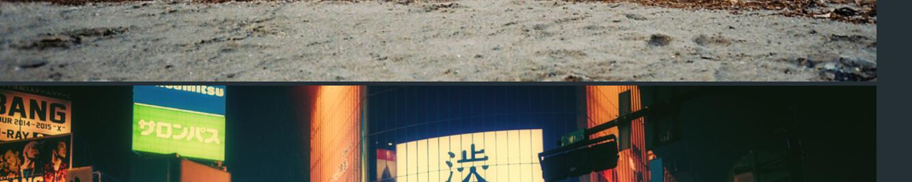
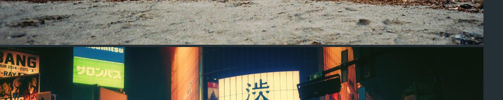

<img>标签与父级元素有间隙的解决办法
刚刚学到的，为了加深印象，先记下来，下次注意：
写代码时发现<img>标签与父级元素有间隙，而找不到这个间隙是什么。。。
如图：
在没设置定位属性的情况下，设置<img>的font-size:0px即可。
<img>
2017-07-03
刚刚学到的，为了加深印象，先记下来，下次注意：
写代码时发现<img>标签与父级元素有间隙，而找不到这个间隙是什么。。。
如图：
在没设置定位属性的情况下，设置<img>的font-size:0px即可。